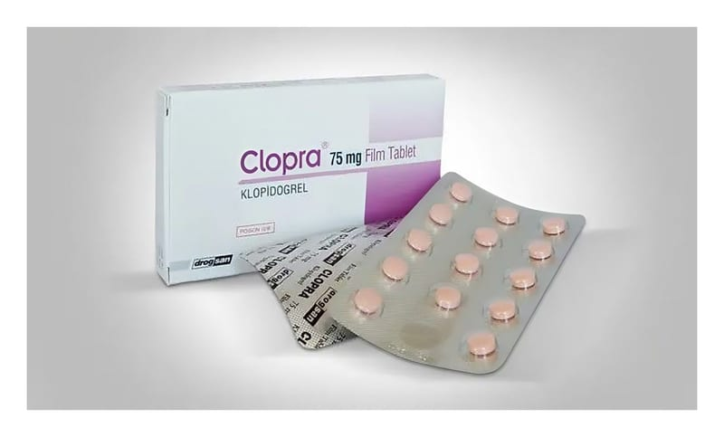

Clopra 75 mg Film Kaplı Tablet, 28 Adet

Ne için kullanılır
KT · Bölüm 1• CLOPRA 75 mg, 28 film kaplı tablet içeren blister ambalajlarda kullanıma sunulmuştur. Pembe renkte film kaplı tabletlerdir.
• CLOPRA tabletin etkin maddesi olan klopidogrel antitrombositer ilaçlar adı verilen bir ilaç sınıfında yer alır. Trombositler, kırmızı ve beyaz kan hücrelerinden daha küçüktürler ve kan pıhtılaşması sırasında kümeler oluştururlar. Antitrombositer ilaçlar, bu kümelenmeyi engelleyerek kan pıhtısı oluşumu riskini azaltır (kan pıhtısının oluşum sürecine tromboz adı verilir).
• CLOPRA, sertleşmiş kan damarları (atardamarlar) içinde kan pıhtısı (trombüs) oluşumunu önlemek amacıyla kullanılır. Bu süreç, aterotromboz olarak adlandırılmakta ve inme, kalp krizi veya ölüm gibi aterotrombotik olaylara yol açabilmektedir. • Doktorunuz size CLOPRA’yı aşağıdaki nedenlerden biri veya birkaçı dolayısıyla reçetelemiş olabilir: - Sizde damar sertliği (aterotromboz) varsa ve - Daha önce kalp krizi, inme veya periferik arter hastalığı olarak bilinen bir hastalık geçirdiyseniz, - “Kararsız anjina” adı verilen şiddetli göğüs ağrısı veya “miyokard enfarktüsü” (kalp krizi) geçirdiyseniz. Bu durumun tedavisi için, doktorunuz kan akışını düzeltmek amacıyla daralmış veya tıkanmış atardamarınıza stent takmış olabilir. Bu durumda doktorunuzun size asetilsalisilik asit de reçetelemiş olması gerekir (asetilsalisilik asit, ağrı kesici, ateş düşürücü ve kan pıhtılaşmasını önleyici birçok ilacın içinde bulunan bir maddedir). - Kısa bir süre içinde kaybolan inme semptomları (geçici iskemik atak olarak da bilinir) veya hafif şiddette inme geçirdiyseniz. İlk 24 saat içinde doktorunuz size asetilsalisilik asit de verilebilir. - Kalp atışlarınızın düzensiz olmasına neden olan “atriyal fibrilasyon” adı verilen bir durumunuz varsa ve yeni pıhtıların oluşmasını ve mevcut pıhtıların büyümesini engelleyen “oral antikoagülanlar” adı verilen ilaçları (K vitamini antagonistlerini) kullanamıyorsanız. Sizin durumunuzda, oral antikoagülanların asetilsalisilik asitten veya CLOPRA + asetilsalisilik asit tedavisinden daha etkili olduğu size söylenmiş olmalıdır. Doktorunuz CLOPRA
+ asetilsalisilik tedavisini, “oral antikoagülanları” kullanamamanız ve önemli kanama riskinizin olmaması halinde reçete edecektir.